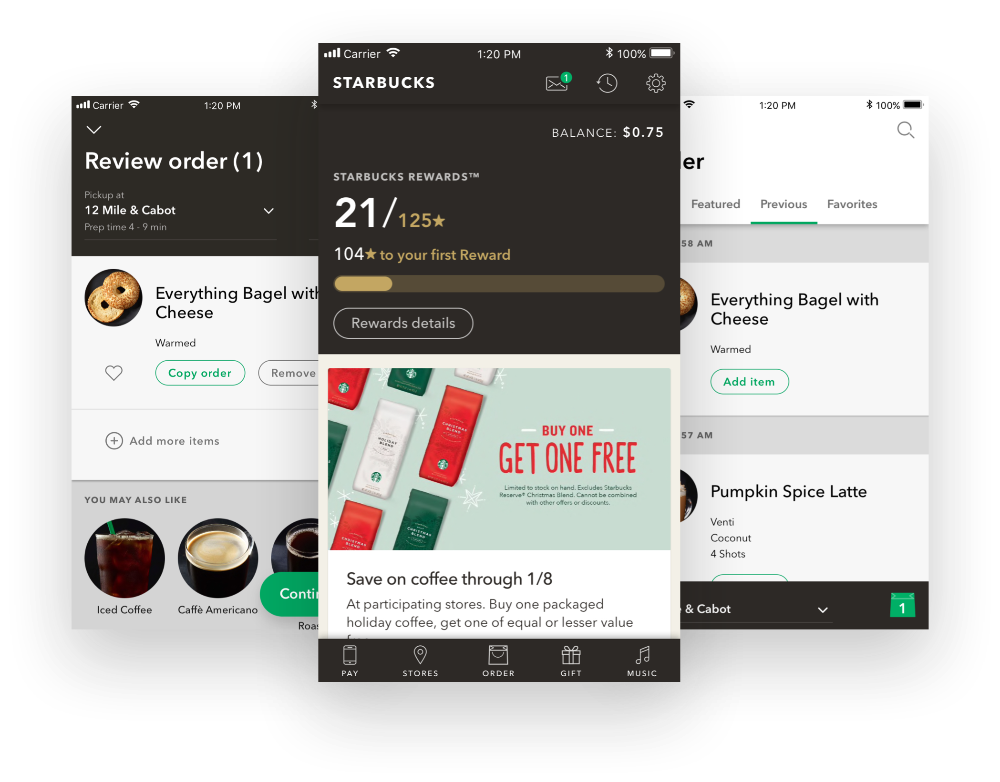

Starbucks Redesign
A redesign of the Starbucks mobile app to better help people access what they want more clearly and speedily.
Overview
There was a point in my life when I put back three ventis a day. During those days, I used the Starbuck’s app quite often. There were certain aspects of the app that I thought could be improved, so as a personal exercise I decided to redesign the app on the assumption that other people run into these issues as well.
Problems
Coming from my personal run-ins with the app, there were both clarity and navigational issues that I discovered:
Problems
- Nav area is crammed at the top and not within comfortble reach.
- No visual notifications for inbox messages or new offers besides the main feed, which requires scrolling.
- Icons are not consistent and super clear.
Assumptions and Constraints
I made serveral assumptions during this project based off of my run-ins while using the app:
Assumptions
- The app is mostly used by people who are on the go or in a rush and want to quickly place their order and go.
- The app is used by people who are mostly using it for both efficiency and the rewards.
- People use the online ordering feature as much, if not more, than paying in-store.
- People also have the same issues that I do.
Constraints
- Avoided redesigning the feed to focus more on “mindless” design instead of discovery-focused components.
- Designed with the Starbucks design system in mind, limiting more contrasting visual changes.
Solutions
My solutions include a redesign of the main navigation as well as changing the icons to be more explicit and consistent.
Familiar Navigation
The current navigation has eight options all located at the top, making it both crammed and hard to reach. There is a main CTA at the bottom right, but I found it redundant to have those same options within the top navigation as well. I decided to redesign the main nav so that it would be both easier to use and focused on what the users desire from the app.
Current home screen (left) and redesign (right).
I also incorporated notifcations to be more clear and upfront so that people won’t miss out on sweet deals to rack up those stars.
Prototype of the home screen and notification.
Consistent and Explicit Icons
Some of the icons used between screens were the same but served different functions, which can be confusing. I also wasn’t sure what the icons did to begin with when first using the app, leading to a frustrating initial experience.
I redesigned the icons in accordance to Starbucks’ style to give both a clearer heirarchy of their functions as well as being less redundant.
Current order iconography (left) and redesign (right).
Current review iconography (left) and redesign (right).
Prototype of the ordering process.
What I Learned
There were many assumptions with this project as I don’t actually know for certain if other people run into the same problems that I do or if it is even a problem at all. Fortunately, I still learned several things along the way:
Reason for Anything
Redesigns should always be taken with a grain of salt, especially if they are done by one person. It is highly unlikely that one person can redesign a product that a group of people work hard at everyday.
However, I still went ahead and worked on this project for the sake of practice. From it, I was able to learn about how to think from other designers’ perspective. It made me ask questions about why other designers designed the product the way they did. What constraints were they facing? What was their time frame? Did the team have a certain guide they needed to follow, limiting them from a different approach? This helped me to learn not only how to be intentional, but also see intentionality in others.
Design for Longevity
When designing solutions for a product, I not only like to think about how my current solution will solve the problem at hand, but how it will sustain later down the road. Could be six months, a year, to even five years from now.
Thinking this way helps me to consider all the edge cases and use-case scenarios. Of course, no design is ever perfect and can always be improved upon, but just thinking in this mentality helps me to dive deeper.